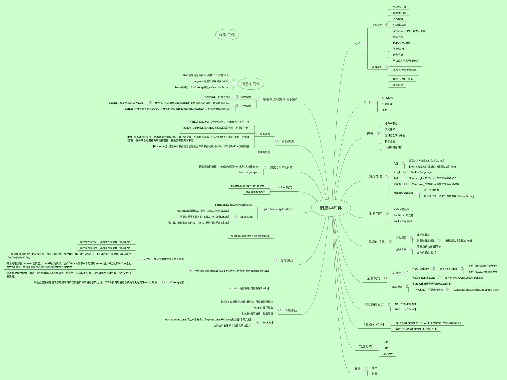

消息中间件总结

参考：
1. Jumper, JMQ 代码 文档
2. Kafka vs RocketMQ——单机系统可靠性 以夕
3. 高可用保证消息绝对顺序消费的BROKER设计方案 丁俊
4. 分布式开放消息系统(RocketMQ)的原理与实践 CHEN川
5. 消息队列设计精要 王烨
6. Kafka设计解析（六）- Kafka高性能关键技术解析 郭俊
7. 事务消息 -> 消息队列 RocketMQ 阿里云官方文档
8. 消息队列 RocketMQ、Apache RocketMQ、消息队列 Kafka、Apache Kafka、RabbitMQ 产品对比 阿里云官方文档